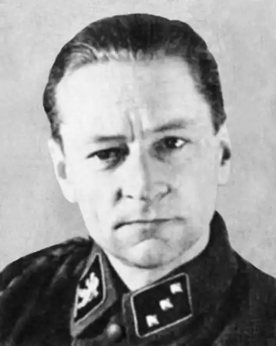

Тис Юрій (1904-1994) – український письменник, журналіст, видавець, історик. Другий псевдонім – Юрій Орест, справжнє прізвище – Крохмалюк.
Народився у Тернополі (за іншими даними у Кракові) 27 жовтня 1904 року. Закінчив вищу технічну школу у Відні (1928). Працював у Львові. Був офіцером Української дивізії УНА.
Після Другої світової війни жив у Інсбруку (Австрія), потім в Аргентині, з 1961 р. – у США. Співзасновник Спілки українських науковців, мистців і літераторів у Буенос-Айресі, голова Інституту української культури, редактор (з 1962) журналу "Терем". Був також головним редактором журналу "Ukrania Libre" і співредактором "Вісті Комбатанта". Автор повістей "Під Львовом плуг відпочиває" (1937), гумористичної повісті "Щоденник національного героя Селепка Лавочки" (1944)[4], повістей "Життя іншої людини" (1958), "Звідун з Чигирина" і "На світанку" (1961), фантастичної повісті "К-7" (1964), збірки оповідань "Симфонія землі" (1951), драми "Не плач, Рахіле" (1952); історичних праць "Бої Хмельницького" (1954), "La Batalla de Poltava" (1960), "Guerra y Libertad" (1961), "UPA Warfare in Ukraine" (1972); статей в українській, іспанській та англомовній пресі. Помер 1 січня 1994 року у Детройті (США).